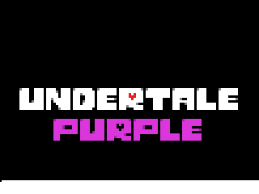
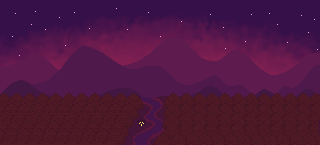

THE STORY
A Force of Guidance.
Guided by their PERSEVERANCE, Hope traverses several new areas, none of which have been fully seen before. They will overcome numerous challenges, face intimidating enemies, and maybe even make some new friends.

A fan-made story of PERSEVERANCE.
UNDERTALE Purple is an UNDERTALE fan project following the story of the PERSEVERANCE SOUL. This project focuses on the fallen human named Hope and their story in the Underground.
THE STORY
Guided by their PERSEVERANCE, Hope traverses several new areas, none of which have been fully seen before. They will overcome numerous challenges, face intimidating enemies, and maybe even make some new friends.
HOPE
Hope, intrigued by what lies beyond the veil of Mt. Ebott, ventures into the Underground willingly. What awaits them, however, is beyond their imagination.
THE PROJECT
UNDERTALE Purple is an unofficial fan project and is not affiliated with Toby Fox. We aim to follow established canon as closely as possible, with some creative liberties being taken.
CURRENT STATUS:
Development is going quite smoothly. The current goal is to release a demo by the end of summer 2026, if not earlier. This page will be updated as more news becomes available.

Yes. UNDERTALE Purple is a free, fan-made project and will be available at no cost.
The current goal is to release the demo by the end of summer 2026, although this may change depending on development.
UNDERTALE Purple is currently being developed for Windows. Support for other platforms is most likely impossible.
Yes. Extremely.
Yes. Once a public build is available, you are welcome to stream, record, and create videos featuring UNDERTALE Purple. Just be sure to link the game in the description of the video.
Join the UNDERTALE Purple Updates Discord server for exclusive previews, announcements, and community discussion. I may also post updates on my TikTok or other social media. My handle is always toebeans228.